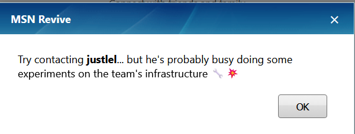
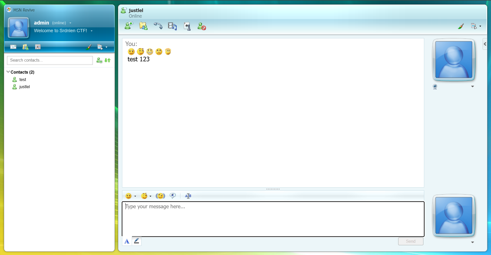

Writeup
MSN Revive
Description
I've started building my own personal version of MSN. The site is still under development, but you can already start chatting with your friends...
Website: http://msnrevive.challs.srdnlen.it
Attachment: web_msn_revive.zip
Solution
In this challenge we are tasked with somehow exploiting an unfinished MSN clone. As in any #web task we start by just feeling around the website.
Website Recon
When we first load up the website we are greeted by an MSN themed login/sign-up form
There is a password recovery option but it is just a prompt to contact one of the devs.

The only other option we have is to create a user and check out the main page. The register field sends a simple userpass json to api/auth/register and in return we get our user_id.
api/auth/register http exchangeLogging in is a similar process, sending our userpass to api/auth/login and getting our Flask-Login session cookie as well as user_id and username.
api/auth/login http exchange Next we are redirected to the main page of the website. There are a lot of buttons but most of them do nothing and the settings are "WIP".
The only option we have is to add contacts, but we cannot add contacts that do not exist. If we remember from the password recovery prompt, there should be a user with the username "justlel". So let's try adding him to contacts. The add contact button makes a simple call to api/chat/create providing our Flask-Login cookie and the username of the new contact then receiving a session_id of the chat and an "ok":true confirmation.
api/chat/create http exchangeNext a http request is sent to api/chat/sessions providing the Flask-Login cookie and receiving info on all the chat sessions available to us.
api/chat/sessions http exchange I created two user accounts "admin" and "test". Since "test" is the first user account I created and it has "user_id"=5 and "admin" has "user_id"=6 and "justlel" has "userid"=1 we can guess that there are 3/4 default accounts besides "justlel". In the chat we can send text and some emojis, though "justlel" never reacts in any way.

The chats are loaded by sending a http request with our Flask-Login cookie to api/chat/[chat-id] and receiving the chat contents in JSON format.
api/chat/[chat-id] http exchangeSending messages is a simple http call sending a json of the text message to api/chat/[chat-id]/send and receiving the message id and success confirmation.
api/chat/[chat-id]/send http exchangeI also tried creating multiple accounts and chatting between them but receiving any messages from another user permanently breaks the chat and shows an invalid_user error. Maybe we can later find the reason in the source code.
We can't really get much else from just looking at the website and our interactions with it so let's summarize the available interaction vectors and check them for common vulnerabilities.
Summary:
There aren't that many ways that we can actually interact with the web app as an outside user. Here are the ones we found with this quick look around.
- Auth API
api/auth/registerapi/auth/login
input: username and password
output: Flask-Login cookie and user_id
- Chat API
api/chat/create
input: username and Flask-Login cookie
output: new chat session_idapi/chat/sessions
input: Flask-Login cookie
output: JSON of all chats available to userapi/chat/[chat-id]
input: Flask-Login cookie and chat session_id (via URL)
output: JSON of complete content of given chatapi/chat/[chat-id]/send
input: Flask-Login cookie, message content and chat session_id
output: message_id
The last thing I want to check before diving into the source code is the Flask-Login cookie, because in many tasks important data is leaked through cookies. So I made a simple decoder.py script to check for that
Output:
❯ py decoder.py
Session data: {'_fresh': True, '_id': '03b379a3f64328d80ed73e439b512b1d8e3ec741ef7473fbf0b61c1b16dae414178efe06318463d27b60a4d4bb40a75a62153d8a5701d754c3cbf774360f6e0c', '_user_id': '6'}
Timestamp: 2026-03-02 11:10:00
Signature hash: 6a0df5801e38c295d68bfe9ba8a0e5b41bad3769
Unfortunately in this instance the cookie does not give us any new information.
Source Code Analysis
Usually in a web task I would go straight to testing the api for the classics like SQLi, XSS, IDOR, SSRF and so on. However here we are provided the source code of the web app and can save a bunch of time just reading the code compared to blind testing.
First lets try the obligatory grep for the flag. This will almost never result in an actual solution, because usually in the task provided code all the secrets are [REDACTED]. Nevertheless, it helps us understand from where we need to get the flag.
❯ grep -r "srdnlen{.*}" src
src/backend/utils.py: flag = os.environ.get("FLAG", "srdnlen{REDACTED}")
src/docker-compose.yml: - FLAG=srdnlen{REDACTED}
We see that the flag string originates from src/backend/utils.py so let's take a quick closer look at that file before analyzing the api code.
The biggest and most interesting part of this code is the init_db function. It initiates the database creating 4 default accounts (justlel, darkknight, uNickz, pysu) and a chat between justlel and darkknight with session_id=00000000-0000-0000-0000-000000000000. But most important are the contents of that chat:
[justlel] - Hi Chri, I've finished setting up the team's infrastructure.
[darkknight] - We Lo, thanks! I'll take a look at them as soon as I can.
[justlel] - Perfect, I'll send you the password here. srdnlen{REDACTED}
So now we have a clear goal:
Access the messages from the chat with session_id 00000000-0000-0000-0000-00000000000
Now with this goal in mind we can comb through the rest of the source code.
Let's look through the src/backend/api.py file. It seems to contain the main logic for the api endpoints.
Mainly in here we can see the exact logic that makes the endpoints we mapped in the recon phase work. But what caught my eye on the first glance was this comment on the chat_export function:
NOTE: This endpoint is a temporary WIP used for validating the export
rendering logic.
Since it is a WIP it is more likely to have some error that leads to a vulnerability that we can exploit. Let's analyze it further.
@api.post("/export/chat")
def chat_export() -> tuple[Response, int] | Response:
data = request.get_json(force=True, silent=True) or {}
sid = (data.get("session_id") or "").strip()
fmt = (data.get("format") or "html").strip().lower()
if not sid:
return error(
"missing_session_id", "MISSING_SESSION_ID", HTTPStatus.BAD_REQUEST
)
if fmt not in ("xml", "html"):
return error("bad_format", "BAD_FORMAT", HTTPStatus.BAD_REQUEST)
if not ChatSession.query.get(sid):
return error("unknown_session", "UNKNOWN_SESSION", HTTPStatus.NOT_FOUND)
# NOTE: This endpoint is a temporary WIP used for validating the export
# rendering logic.
return success({"data": render_export(sid, fmt)})
There are a few issues with this function. One of them being it is missing the existing is_member check, which is used in the /api/chat/[session_id] endpoint. Which means that currently any user could export any other users chat, provided they found out the session_id. The other problem is that it is missing the @login-required decorator meaning anyone with a session id can export that chat.
Call the api/export/chat endpoint trying to export the developer chat.
Let's try doing that.
api/export/chat http exchangeSo that didn't work. We need to find a way to bypass the local access check. The first thing that comes to mind is spoofing via trusted client IP headers. Since we can quickly check that before looking in the code for the logic of the client IP checking function let's try that first.
api/export/chat http exchange with spoofed client IP headersSame response, it seems the api is configured not to trust such headers or 127.0.0.1 is not considered "local". To find that out we need to dig back into the code. After a few greps and a bit of manual searching we can find src/gateway/gateway.js.
❯ grep -r "local"
gateway/gateway.js: return res.status(403).json({ ok: false, error: "WIP: local access only" });
frontend/README.md:L'applicazione sarà disponibile su `http://localhost:5173`
frontend/nginx.conf: log_format main '$remote_addr - $remote_user [$time_local] "$request" '
If we look at the line grep found for us we can see the logic behind the localhost limitation. Specifically the app.all middleware function and the isLocalhost helper function.
app.all("/api/export/chat", (req, res, next) => {
if (!isLocalhost(req)) {
return res.status(403).json({ ok: false, error: "WIP: local access only" });
}
next();
});
function isLocalhost(req) {
const ip = req.socket.remoteAddress;
return ip === "::1" || ip?.startsWith("127.") || ip === "::ffff:127.0.0.1";
}
What these functions do is they test all requests to exactly /api/export/chat and if the request is not from the defined "localhost" options then it is blocked and a 403 error is returned. The vulnerability we can notice here is that the endpoint in the request is compared to this string /api/export/chat and if it does not match exactly the localhost check will not happen. And if we remember from all the http exchanges the server uses Server: nginx/1.29.5 which automatically decodes url encoded symbols. So we can try bypassing the check by sending request not to /api/export/chat but to /api/export%2Fchat.
api/export%2Fchat http exchangeIf we quickly beautify the html we got in the response we get this:
<!doctype html>\n
<html>\n
<head>\n
<meta charset=\ "utf-8\"/>\n
<title>MSN Chat Export</title>\n
</head>\n
<body>\n
<h1>Chat Export</h1>\n
<p><b>session_id</b>: 00000000-0000-0000-0000-000000000000</p>\n
<p><b>generated_at</b>: 2026-03-05T06:21:17.359961+00:00</p>\n
<h3>Meta</h3>\n
<h3>Messages</h3>\n
<table border=\ "1\" cellpadding=\ "6\" cellspacing=\ "0\">\n
<tr>
<th>ts</th>
<th>kind</th>
<th>sender_id</th>
<th>body</th>
</tr>\n
<tr>
<td>2026-03-02T09:20:38.165596</td>
<td>message</td>
<td>1</td>
<td>Hi Chri, I've finished setting up the team's infrastructure.</td>
</tr>
<tr>
<td>2026-03-02T09:20:38.165600</td>
<td>message</td>
<td>2</td>
<td>We Lo, thanks! I'll take a look at them as soon as I can.</td>
</tr>
<tr>
<td>2026-03-02T09:20:38.165601</td>
<td>message</td>
<td>1</td>
<td>Perfect, I'll send you the password here. srdnlen{n0st4lg14_1s_4_vuln3r4b1l1ty_t00}</td>
</tr>\n
</table>\n
</body>\n
</html>\n
for this I pasted the flag manually because the actual task servers went down immediately after the CTF
And great success we have found the flag.
TLDR
src/backend/api.py has an api/export/chat endpoint which is vulnerable to an IDOR that allows us to export any chat if we know its session_id, but it is limited by a middleware function to only allow access from localhost. The middleware function is vulnerable to a path bypass via url encoding because of a parser differential.
Solving Request
api/export%2Fchat http exchange